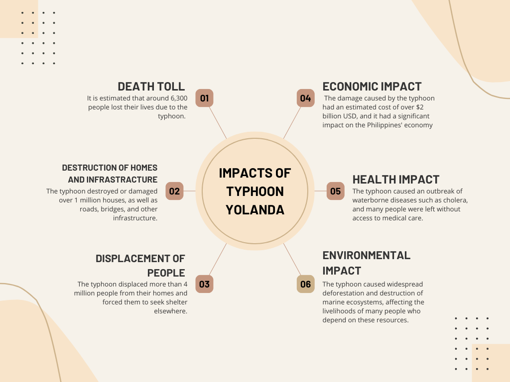
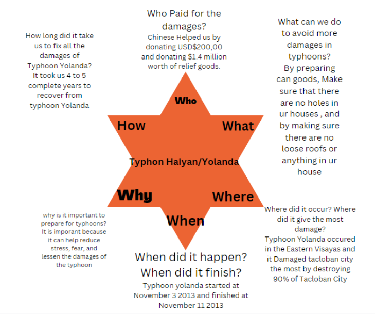
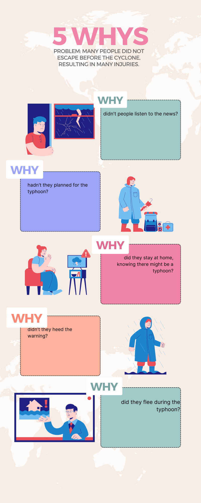

Typhoon Haiyan
(Yolanda)
One of the most powerful tropical cyclones ever recorded.
Overview
Content of this website
· Nov. 2: The storm is detected as a low-pressure area in Micronesia.
· Nov. 4: The system is upgraded to a tropical storm and named Haiyan.
· Nov. 6: It hits Palau and parts of Micronesia. After growing in intensity for days, Typhoon Haiyan became a Category 5 storm, with wind speeds above 157 mph.
·Nov. 7: Haiyan enters the Philippines area; alerts, preparations, and evacuations intensify.
·Nov. 8: At 4:40 a.m., Haiyan makes landfall in Eastern Samar at peak capacity. It continues to spread destruction through the Visayas, the Philippines’ central island group.
· Nov. 9: The storm moves out into the South China Sea, heading toward Vietnam.
· Nov. 10: Haiyan makes landfall in northeast Vietnam, much diminished, then disintegrates into bands of rain over Guanxi, China.
Answer No.1

Answer No.2

Answer No.3
